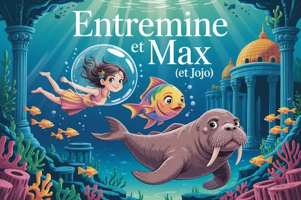

Entremine et Max (et Jojo), nouvelle
Nouveau récit écrit en coopération avec Diatomée. Seule l’inspiration engendrée par les mots de notre partenaire nous a guidées.
« Entremine et Max » vient à la base de « entre min et max », à savoir le niveau d’huile dans la friteuse ! À partir de là, j’ai pensé que ce serait de bons noms de personnages. C’est resté dans un coin jusqu’à ce que nous nous lancions dans ce défi. Jojo est entre parenthèses dans le titre, car il est arrivé par la suite 😊.
On a bien rigolé en écrivant cette petite histoire, en s’alternant 😁.

Entremine se retrouve embarquée dans une folle aventure aquatique.
Environ 25 minutes de lecture.
Entremine et Max
(et Jojo)
Entremine passait de longues heures à se promener le long du canal. Que ce soit à pied, à vélo ou en trottinette, elle adorait vagabonder au bord de l’eau. Il y avait toujours un volatile volubile pour l’amuser. Et justement, ce jour-là, elle ne fut pas déçue de sa nouvelle rencontre.
Max sortait de sa sieste. Il se dirigeait en titubant vers sa gamelle de croquettes, lorsqu’il vit le capitaine étalé au pied de la barre. Le bateau filait dans le canal à douce allure, mais le vent pouvait se mettre à souffler dans la voile à tout moment. Affolé, le jeune labrador aboya en direction de la berge.
Alertée par les cris du chien, Entremine posa le pied à terre pour freiner son bolide à deux roues. La trottinette fit une pirouette entre ses jambes quand elle se retourna pour regarder ce qui se passait.
Max avait posé les pattes avant sur le bord du bateau. Il savait donner de la voix.
– Pourquoi tu chiales ? lui lança Entremine.
Pour toute réponse, le labrador sauta à l’arrière de l’embarcation pour continuer de la regarder en hurlant. Entremine ne réfléchit pas plus longtemps. Il semblait n’y avoir personne à bord et le chien avait un problème. Elle abandonna sa trottinette, revint sur ses pas en courant et sauta d’un seul bond au milieu du canal. Il ne lui restait qu’à nager un peu pour s’accrocher à la grosse bouée attachée sur la coque du navire. Elle grimpa sans se faire prier, bien que Max l’accueillit avec une frénésie qui laissait penser qu’il l’avait effectivement priée de monter.
– T’es un bon chien, toi. Eh oh, y’a quelqu’un ?
Max se précipita à l’avant et reprit ses jérémiades. Entremine découvrit alors le capitaine.
Il avait l’air simplement endormi, ou évanoui. Et s’il était mort ?
Entremine se baissa pour le secouer, doucement. Aucune réaction.
Elle s’agenouilla pour prendre son pouls à son poignet. Impossible de remonter la manche de sa marinière.
Elle décida alors de vérifier à son cou. Impossible de descendre un peu son col roulé. Désormais, le capitaine avait l’air… faux, fake, complètement bidon. Oui, c’était étrange, mais comment expliquer autrement que son tricot soit greffé à sa peau ?
Ce constat effraya d’abord Entremine, mais elle eut ensuite l’idée de vérifier s’il y avait un souffle perceptible. Elle plaça sa main, encore trempée de sa baignade, sous les narines du Capitaine, dans sa moustache opaline et hirsute.
– Il respire ! clama-t-elle au chien.
Cette nouvelle enchanta Max, qui sauta aussitôt sur la poitrine du capitaine et lui lécha la frimousse. Entremine le saisit sous les pattes.
– Ne l’étouffe pas, veux-tu ?
Elle tira sur la gourmette attachée au collier du labrador.
– Max, lut-elle. Ne t’inquiète pas, on va le réveiller.
Elle se redressa et examina le pont, à la recherche de quelque chose susceptible de sortir le matelot de sa torpeur. Un seau en bois, relié au bastingage par une corde, attira son attention. Il était rempli de sardines. Entremine s’en empara et le versa sans ménagement sur l’inconscient. L’énorme langue du capitaine balaya ses lèvres, sa moustache et son nez avant qu’il n’ouvre des yeux gourmands.
– Ça va, Capitaine ? lui demanda aussitôt la jeune fille, dans un souffle, alors que Max se remettait à japper en tapotant de ses gros coussinets les sardines qui clapotaient alentour.
– Par mes poils ! s’écria le vieil homme en sautant sur ses pieds. Qui es-tu, gamine ?
– Qui je suis, c’est le cadet de nos soucis. La frégate fonce sur l’écluse.
Le capitaine maugréa dans sa moustache, étonnement disciplinée et cendrée depuis qu’elle avait été mouillée. Il se précipita sur la barre. Après un instant d’hésitation, il fit néanmoins un geste agacé de la main en direction de Max et d’Entremine. Le labrador en perdit la voix. Quant à Entremine, elle se cramponna pour ne pas glisser sur le pont, en même temps que le bateau plongeait, proue la première. Elle avait remarqué que son nouvel ami canin arborait désormais une queue de poisson et des palmes. Et elle sentait bien qu’une étrange bulle ondulante lui flottait autour des oreilles. D’ailleurs, elle voyait flou à travers. Mais ce qui la surprit le plus, quand le bateau fut totalement immergé, ce fut le capitaine qui se mit à nager devant elle, toute redingote envolée, dans une peau de morse des plus élégante.
Le Capitaine avait changé d’ADN. « OK. Tout va bien. Et je respire sous l’eau », pensait Entremine. L’embarcation crépitait en des milliards de bulles rejoignant la surface.
– Ne fais pas attention à mon métamorphe de main. ll est bourru et pragmatique. Après tout, c’est un INTJ !
La jeune fille n’avait rien compris aux dires du poissien palmé, si ce n’était qu’elle devait ignorer le morse rescapé. Mais comment s’y prendre, alors qu’il barbotait juste devant avec aisance, gobant les sardines sans défense ?
C’était simple, les fondations de l’écluse s’approchaient dangereusement vite. Entremine ferma les yeux d’instinct, terrifiée. Elle ne pensait plus qu’à sa mort.
– Regarde… Eh ! Ouvre tes yeux, Bichette !, s’exclama Max.
– Hein ? Wallah ! C’est quoi ça ?
– La splendide Atlantide !
La cité d’Atlantide ? C’était impossible. Ils étaient dans le canal à peine quelques secondes auparavant. En même temps, le chien était devenu un drôle d’animal aquatique et le capitaine, un morse ! Tout était possible. Entremine se fit une raison assez vite, en fin de compte. Et puis, elle avait l’opportunité de découvrir la magnifique cité engloutie dont elle avait si souvent entendu parler dans des histoires. Une question demeurait, cependant : pourquoi l’avoir emmenée avec eux ?
De toute évidence, le capitaine n’était pas ravi de sa présence, même s’il était désormais trop occupé à pêcher pour le manifester. Quant à Max, eh bien, n’était-ce pas lui le véritable meneur de cette aventure ? Son air paniqué et ses aboiements plaintifs ne semblaient plus tout à fait naturels, désormais. Et l’inconscience du capitaine non plus, à bien y réfléchir.
Pendant qu’ils flottaient dans un courant étonnamment doux qui les fit plusieurs fois tournoyer en spirales, c’était le moment idéal pour essayer d’obtenir des réponses.
– Pourquoi m’as-tu fait monter à bord, Max ? Et qui êtes-vous ?
– Excellentes questions, Bichette.
« Quelle arrogance ! » songea Entremine. Décidément, ce poissien avait bien caché son jeu en imitant le gentil petit labrador apeuré. Il était insupportable !
– Bon, capitula Max devant l’expression furibarde de la jeune fille, accentuée par l’énorme bulle qui enveloppait sa tête. Je suis un Atlante, bien sûr. Et Jojo, mon métamorphe de main, comme je te le disais. Nous te cherchions, Entremine.
Sans parler du fait que le morse était un genre d’animal domestique capable de changer de peau pour son maître, apparemment, ledit morse s’appelait Jojo. C’était proprement ridicule. Mais Entremine aussi était pragmatique, en plus d’être courageuse et futée. Elle laissa donc couler, et ajouta :
– Et donc ? Pourquoi me cherchiez-vous ?
– Tu n’as pas une petite idée ? ironisa Max en la narguant d’un sourire mi babines canines, mi lèvres à écailles.
Entremine croisa les bras.
– OK, abdiqua Max. Tu es l’élue, bien sûr.
Sur la rive, Alicia fut la première à rencontrer la trottinette esseulée, gisante sur le gravier. « C’est un bon modèle », pensait-elle, elle qui écumait les boutiques à la recherche de ce modèle si convoité, et que l’on ne trouvait plus que dans ses rêves les plus cools. Elle voulait bien l’adopter, évidemment, mais pas en la volant. Elle se posa sur un banc, à côté. « Si en cinq minutes je ne constate aucune propriété, elle sera mienne. » Et comme prévu, elle repartit avec.
Pendant ce temps, aux abords des fonds marins, Entremine affichait son air le plus incrédule à Max. Il devait expliquer d’avantage et cela le fatiguait, mais d’une force… indécente.
– Bon. Je t’ai élue un peu au pif. Il me fallait quelqu’un au bon cœur, et le jeu du bon toutou à son maîmaître servait à ça. Tu étais là au bon moment.
Comme Max terminait sa délicate transformation, en poisson-main, il devait donner de plus en plus de voix et se forcer pour ne pas tendre trop vers l’aigu. Si bien qu’à un moment, Jojo se changea pour lui en un petit dispositif confortable, amplifiant et aggravant les sons. C’était pratique, mais ça répandait une forte odeur de sardine dans l’air de la bulle d’Entremine.
– Et pourquoi as-tu besoin d’une bonne poire ?
– Pour deux raisons : la première est de régler un différend chez les Atlantes, et la seconde est de m’aider à récupérer ta chère trottinette.
La formidable cité engloutie ne se trouvait désormais plus qu’à 500 pieds plus bas.
Alors qu’un palais étincelant aux allures de château des glaces se dessinait de plus en plus nettement dans les profondeurs, Entremine se demandait ce que sa trottinette pouvait bien avoir à faire là-dedans. À n’en point douter, l’embobardeur était en train de l’embobarder.
Le tourbillon aqueux qui les emmenait jusqu’à la cité sembla ralentir sa course. Un dôme identique à la bulle de la jeune fille – devenue irrespirable – enveloppait les murailles, les bâtisses et les tours aux contours flous et bleutés. Entremine se laissa distraire un moment, quand elle sentit son corps aspiré tout entier dans un goulot étroit. Pressée contre les parois de cet entonnoir incongru, elle en perdit son souffle et commença à suffoquer. Ce ne fut qu’une fois passée de l’autre côté de la bulle qu’elle put respirer librement, sans l’aide de son scaphandre improvisé aux senteurs de poiscaille. Tout baignait pourtant encore dans de l’eau, qui glissait sans douleur dans les moindres particules de son corps. Après une longue inspiration légèrement iodé, elle enchaîna :
– Laissons la trottinette de côté pour le moment, il faut trop que je visite ! Et tu me diras c’est quoi ce différend chez les Atlantes.
Ils foulèrent le pavé dans des ruelles étroites et sur des avenues spacieuses, se laissant guider par la plus haute pointe du palais central. Max avait entreprit, la voix amplifiée par son Jojo-phone, de lui expliquer que le Roi des Atlantes n’était pas d’accord avec ses sujets sur la façon d’exposer sa population à celle des humains, sur la terre ferme.
– La question ne se pose pas, rétorqua Entremine tout en examinant une façade de bâtiment recouverte de coquillages assemblés en une forme de sirène. Votre cité est une légende et personne ne croit que des gens y vivent encore.
– C’est là que tu te goures, ma Bichette. Quelques humains connaissent notre existence et nous mettent en avant dans des histoires.
– Oui, mais comme je disais, ça passe pour une légende. Votre Roi craint pour votre cité ?
– Non, si seulement… Notre Roi aimerait se faire brosser les écailles un peu plus, si tu vois ce que je veux dire.
Max lui octroya un regard suggestif qu’elle ne pouvait comprendre, étant donné qu’il avait une tête de poisson-main. Il avait l’air tellement empoté. Sa lenteur, par chance, permettait à la visiteuse de tout observer et de passer ses doigts, par-ci, par-là, sur les pierres opalines et nacrées.
– Je ne vois pas ce que tu veux dire.
– Ah.
Max s’ébroua bizarrement, comme s’il cherchait encore à agir comme un chien.
– C’est simple. Tu connais Aquaman ?
– Le super-héros ?
Étonnée, Entremine reporta son attention sur son compagnon.
– Moui, c’est ça. Le super-héros.
Il toussa comme si quelques mots ingrats restaient coincés dans sa gorge. Lui indiquant de gravir les premières marches du palais en sa compagnie, il poursuivit :
– Eh bien, cet Aquaman que tu connais, c’est notre Roi.
– Quoi ?!
Entremine s’arrêta en glissant sur une perle, abandonnée là. Elle ne pouvait croire à cette histoire. D’abord, ce personnage apparaissait sous de nombreuses apparences, et puis il était clairement dépeint comme le leader de la cité engloutie, dans les histoires qui le mettaient en scène. Les gens qui avaient écrit ces histoires ne pouvaient pas avoir eu le culot de balancer la vérité, si ? Jusqu’à l’odeur de poissons… Ils avaient le soucis du détail.
– Redescends, grogna Max en grimpant sur sa chaussure, pour rétablir son équilibre précaire. Lui et moi nous ressemblons un peu, tu vois… Donc rien à voir avec Jason Momoa.
– Ah oui.
Le poisson-main fit mine de ne pas se vexer, mais il était clairement dégoûté par la réaction de son élue.
– Alors c’est quoi le problème ? tenta Entremine, un peu mal à l’aise de l’avoir froissé.
– Le Roi veut se la péter en laissant croire qu’il est ce qu’il n’est pas et le peuple en a gros. Il a les miquettes de prendre cher. C’est plus clair ?
– Oui, et c’est complètement débile. Qu’est-ce qu’un « bon cœur » vient faire là-dedans ?
– Bonne question. Le « bon cœur » serait censé faire comprendre au Roi qu’il n’a pas besoin d’en ajouter, et qu’il ferait mieux de rester discret. Mais je commence à me demander si j’ai fait bonne pioche. Tu as de la sympathie pour les chiens, mais pas tellement pour les poissons on dirait.
Piquée au vif, Entremine redressa le menton.
– Bah, on va bientôt le savoir. C’est par ici, la rencontre avec le Roi ?
Elle désignait les hautes portes du palais, recouvertes de sculptures en coquillages, elles aussi. Une immense raie manta et un hippocampe tout aussi démesurés les accueillirent et poussèrent les battants pour leur ouvrir le chemin.
– Voici l’élue, révéla Max sans Jojo l’intermédiaire.
Entremine ne l’entendit pas du tout, mais Ray et Pocampi firent aussitôt des mouvements s’apparentant à une révérence.
– Si vous le cherchez, le Roi pousse la chansonnette dans son salon personnel.
Jojo se changea alors aussitôt en le morse qu’il était quinze minutes auparavant, pour protester d’une voix agitée, plaintive, grave et forte.
– J’y vais pas ! Non, j’irai pas.
Max fit quelques gestes de ses palmes pour lui rappeler l’importance de la mission. Devant ce spectacle, Entremine n’avait plus très envie d’aller à la rencontre du Roi. Si Jojo, le morse de 3 mètres de long, d’une tonne et demi et aux défenses proches de sa taille avait peur, alors pourquoi n’aurait-elle pas la trouille elle aussi ? Le peureux métamorphe se changea à nouveau en Jojo-phone pour Max.
– N’aies crainte, Bichette ! Jojo n’aime pas entendre le Roi chanter, ni le voir danser. Mais il n’est pas méchant. Ça reste un Atlante, un vrai…
– Parfait ! Bon, quand il faut y aller.
Entremine s’avança d’elle même vers la porte marquée d’une clé de Sol. Max et son acolyte, de nouveau énorme, la suivirent. Elle toqua. Rien. Max plaça son œil devant un minuscule dispositif qui fit s’ouvrir la porte insonorisée. Une mélodie endiablée surgit alors, faisant fuir une multitude de bulles, puis, le Roi reprit une dernière fois le puissant refrain :
– Woooh, j’ai le blues ! Pas moyen de ressembler à Jason… même si j’ai du flouz !
Se sentant regardé, le chanteur se tourna par trois coups de palmes sur la piste de danse illuminée.
– Vous tombez à pic, mes sujets préférés ! Le karaoké est terminé.
– Tiens, mais qui es-tu toi ?
Le roi des Atlantes laissa tomber son micro sur une anémone endormie.
– Je suis Entremine, votre Altesse.
– Votre Atlantesse, la reprit Jojo dans sa moustache.
– Votre Atlantesse, répéta Entremine, suspicieuse.
Le morse semblait plus calme, bien moins soupe au lait, maintenant que son souverain avait cessé de chanter. L’amateur de karaoké se montra enchanté de rencontrer sa visiteuse et il interrogea Max sur sa venue. À partir de ce moment, la conversation fut pratiquement incompréhensible. Les deux poissons-main parlaient tellement dans les aigus qu’Entremine en vint à se boucher les oreilles. Jojo fit alors une étrange figure acrobatique devant elle, avant d’atterrir dans sa main sous la forme d’une petite oreillette en forme de coquillage. Elle l’inséra tout naturellement dans son oreille et compris enfin que Max essayait de la faire passer pour une experte de l’impact humain sur les océans. Tout à coup le Roi s’adressa à elle :
– Tu confirmes que les humains ravagent les océans ?
– Oui.
– Qu’ils n’ont aucun respect pour la poiscaille ?
– En effet, hésita la jeune fille devant ces propos étonnants.
– Et aussi que Jason Momoa n’est pas le plus classe des hommes-poissons ? poursuivit le Roi, de plus en plus décomposé.
– Je le confirme.
Entremine suivit ses compagnons jusqu’à ce qui ressemblait à une banquette moelleuse, en fait composée de gigantesques plantes aquatiques.
– Votre Atlantesse, ajouta Entremine en regardant le Roi se vautrer dans sa déception, votre cité est exceptionnelle. Elle offre un refuge aux créatures marines les plus extraordinaires, mais aussi un sujet magnifique d’imagination pour mon peuple. Vous révéler aux humains et leur ouvrir les portes de l’Atlantide serait une catastrophe pour vos sujets et vous.
– C’est impossible, s’entêta le Roi, dans le déni. J’ai déjà prévu tellement de choses.
Entremine commençait à ressentir beaucoup de sympathie pour ce poisson-main. Elle lui rappela la manière dont les humains mettaient en scène sa cité et comment ils transformaient ses habitants pour qu’ils leur soient plus semblables. Elle insista sur le manque de représentation des véritables poissons et autres animaux et végétaux marins, soulignant que souvent, ils ne servaient que d’instruments.
– C’est indéniablement ce qui arrivera si des humains viennent ici.
– Alors, pas de karaoké avec Jason ?
– Je crains que non, votre Atlantesse.
De son côté, Max était resté étonnamment silencieux. Il commençait à penser qu’ils avaient eu la bonne pioche en attirant Entremine et que retrouver sa trottinette ne serait pas de trop pour la remercier.
Le Roi était abattu. Une moue semblait s’être installée définitivement sur son visage et son illicium retombait comme le fait parfois la crête d’une poule. Il savait qu’Entremine avait raison. Difficilement, il acceptait enfin de l’admettre. Ses yeux s’asséchaient. De l’oxygène s’en échappaient. Il tenta de la dissimuler, mais c’était vain. Il pleurait à froides bulles.
La jeune fille voulait le prendre dans ses bras, mais elle en aurait fait de la bouillie. « Consoler un poisson, c’est compliqué », pensa-t-elle, juste avant que son Atlantesse ne se reprenne en main.
– Et si on faisait un karaoké, tous ensemble. Quelque chose de joyeux. Ça vous tente ?
Un karaoké était exactement ce dont le Roi avait besoin. Et Entremine connaissait la chanson idéale pour lui rappeler combien son monde était fabuleux. Elle interrogea ses compagnons sur la façon de la jouer et, aussitôt, la lumière de la pièce se tamisa et un groupe de raies, de lieus, de tortues, de limaces et autres êtres marins se mirent à jouer devant un écran noir d’algues. Une ribambelle de planctons phosphorescents s’anima pour former les lettres des paroles au-dessus de l’orchestre. Le Roi sembla surpris, mais ravi. Ce fut Jojo qui se lança le premier.
– Le roseau est toujours plus vert dans le marais d’à côté…
Tout le monde chanta et s’amusa si longtemps que la tristesse s’était totalement noyée dans les multitudes de bulles en suspension. Entremine avait accompli sa mission et elle commençait à se sentir fatiguée. Découvrir ce monde merveilleux était un cadeau, mais elle avait besoin de rentrer chez elle désormais.
Après le tumultueux rythme d’enfer, Entremine s’était mise à buller dans un coin de la salle. Le calme revenait doucement alors que Jojo réussissait l’exploit de faire quelques pas de danse, sans jambes. On ne l’arrêtait plus. Max parla à son bon Roi de la trottinette perdue. Il s’avérait que non seulement la technologie atlante pouvait en produire une dans la minute, mais qu’elle pouvait même l’équiper incognito d’un mode subaquatique. Avec ceci, leur sauveuse pourrait trottiner sans peine jusqu’à l’Atlantide. C’était un présent digne du service rendu et une invitation à revenir.
Jojo prit Entremine sur son dos, pour son retour chez elle. Max les accompagnait sur le bolide à roues, miniaturisé le temps du voyage.
C’est la fin 🤓.